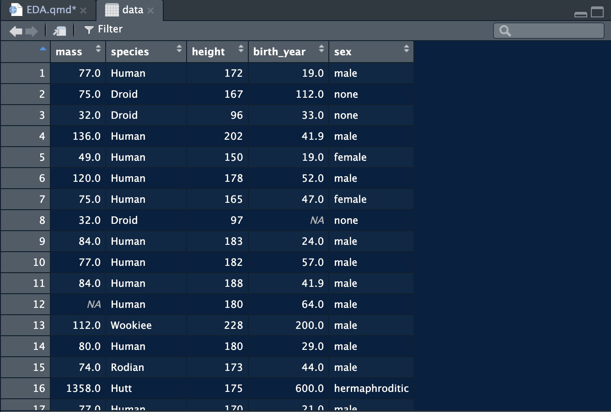

Exploratory Data Analysis: The Basics
Star Wars Data Set

Initial Data Exploration
- You may want to investigate counts for categorical variables
- Missing data
- Basic distributions
- Correlations?
Investigating Categorical Count Data
# Code
data <- data %>%
mutate(sex = as.factor(sex))
data %>% count(species, sort = TRUE)# A tibble: 31 × 2
species n
<chr> <int>
1 Human 22
2 Droid 4
3 Gungan 2
4 Mirialan 2
5 Wookiee 2
6 Aleena 1
7 Besalisk 1
8 Cerean 1
9 Clawdite 1
10 Dug 1
# … with 21 more rowsFinding Missing Data
psych::describe(data) vars n mean sd median trimmed mad min max range skew
mass 1 58 75.58 29.25 79 74.51 16.31 15 159 144 0.39
species* 2 57 13.00 7.39 10 12.43 4.45 1 30 29 0.81
height 3 58 174.00 35.84 180 177.88 18.53 66 234 168 -1.33
birth_year 4 35 76.55 147.00 46 49.29 22.24 8 896 888 4.95
sex* 5 57 1.91 0.47 2 1.91 0.00 1 3 2 -0.27
kurtosis se
mass 0.54 3.84
species* -0.34 0.98
height 1.65 4.71
birth_year 24.61 24.85
sex* 1.13 0.06Assessing Distribution of Variables
# Graphically
hist(data$mass,
xlab = "Mass",
main = "",
col = 'blue',
probability = TRUE)
curve(dnorm(x, mean = mean(data$mass, na.rm=TRUE),
sd = sd(data$mass, na.rm=TRUE)),
add = TRUE, lwd = 2)# Statistically
shapiro.test(data$mass)
psych::describe(data$mass)
Shapiro-Wilk normality test
data: data$mass
W = 0.94726, p-value = 0.01365 vars n mean sd median trimmed mad min max range skew kurtosis se
X1 1 58 75.58 29.25 79 74.51 16.31 15 159 144 0.39 0.54 3.84Output (Graphically)

Running Correlations
corr <- data %>% select(mass,height,birth_year)
corr.test(corr)Call:corr.test(x = corr)
Correlation matrix
mass height birth_year
mass 1.00 0.76 -0.32
height 0.76 1.00 -0.48
birth_year -0.32 -0.48 1.00
Sample Size
mass height birth_year
mass 58 58 35
height 58 58 35
birth_year 35 35 35
Probability values (Entries above the diagonal are adjusted for multiple tests.)
mass height birth_year
mass 0.00 0 0.06
height 0.00 0 0.01
birth_year 0.06 0 0.00
To see confidence intervals of the correlations, print with the short=FALSE option